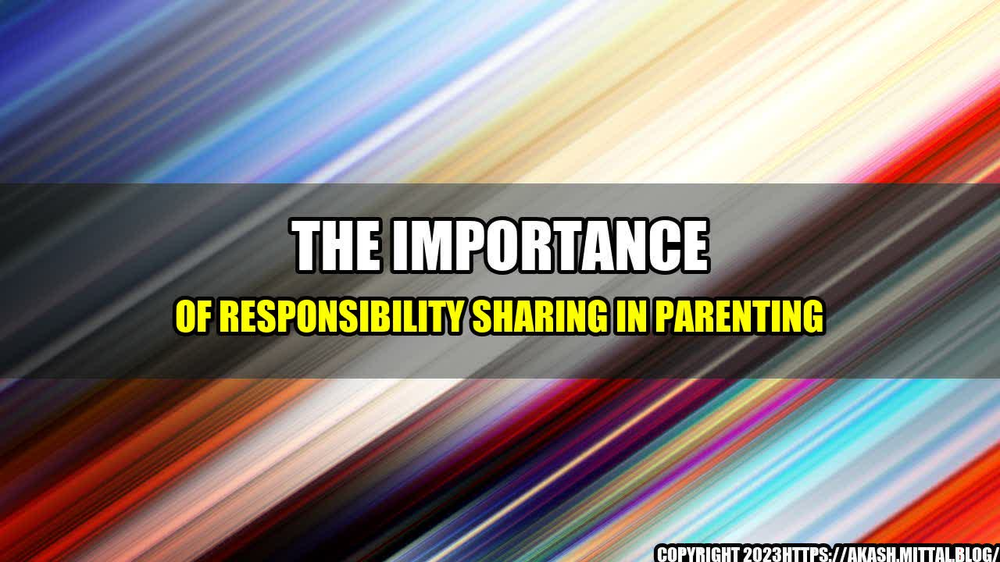

The Importance of Responsibility Sharing in Parenting

Being a parent is no easy task. It requires patience, dedication, and a lot of hard work. Parents have to juggle various responsibilities, from providing for their children to supporting their emotional, social, and educational needs. Add to that the pressure of societal norms that dictate gender roles and the result is often a disproportionate distribution of responsibilities in parenting.
A Personal Anecdote
I remember when my husband and I became parents for the first time. We were both excited and nervous about the prospect of raising a child. During the pregnancy, we discussed and agreed to share parenting responsibilities equally. However, once our son was born, our plans seemed to go out the window. My husband worked full-time, and I was a stay-at-home mom. As a result, the majority of the parenting responsibilities fell on me. This led to resentment and arguments between us, as I felt overburdened and unsupported.
Unfortunately, my story is not unique. According to a study by the Pew Research Center, mothers spend, on average, 14 hours a week on childcare, while fathers spend just 7 hours. Additionally, mothers are more likely to take time off work for family-related reasons, such as caring for sick children.
The Importance of Responsibility Sharing
It's crucial that parents share parenting responsibilities equally to avoid burnout and resentment. Here are three reasons why responsibility sharing is necessary for successful parenting:
Equal Responsibility Leads to Equal Partnership - When both parents share the responsibilities, they form a partnership that is built on equal participation and investment. This creates a stronger bond between partners, leading to a more loving and supportive environment for the children.
Equal Responsibility Encourages a Positive Environment - When mothers are solely responsible for the childcare, it can lead to a sense of isolation, boredom, and exhaustion. This can impact the mother's ability to provide a nurturing and positive environment for the children. Sharing responsibility allows for a more cohesive family unit, where everyone feels valued and included.
Equal Responsibility Sets a Positive Example - Sharing responsibilities sets a positive example for children. When they see both parents participating in household and childcare tasks, it helps to break down gender stereotypes and promotes equality. This will help children grow up with the mindset that both women and men are capable of fulfilling various roles in life.
Practical Tips for Sharing Responsibilities
Regular communication about parenting responsibilities and expectations
Scheduling and planning ahead to avoid conflicts and overload
Flexibility and a willingness to adjust when necessary
Conclusion
Parenting is a team effort, and both parents must share the responsibilities to ensure the best outcome for their children. Shared responsibilities create a positive and nurturing environment that sets a positive example for children and strengthens the bond between partners. By being intentional and proactive in sharing responsibilities, parents can create a balanced and supportive home environment that benefits everyone.
Curated by Team Akash.Mittal.Blog
Share on Twitter Share on LinkedIn